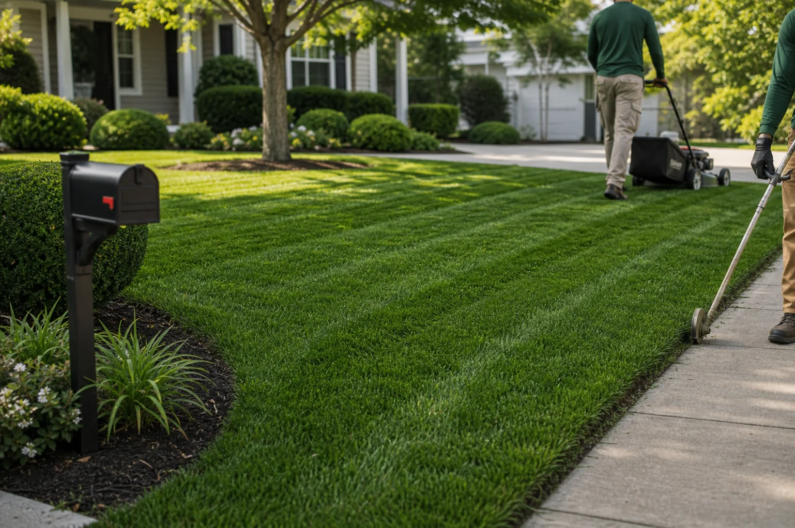
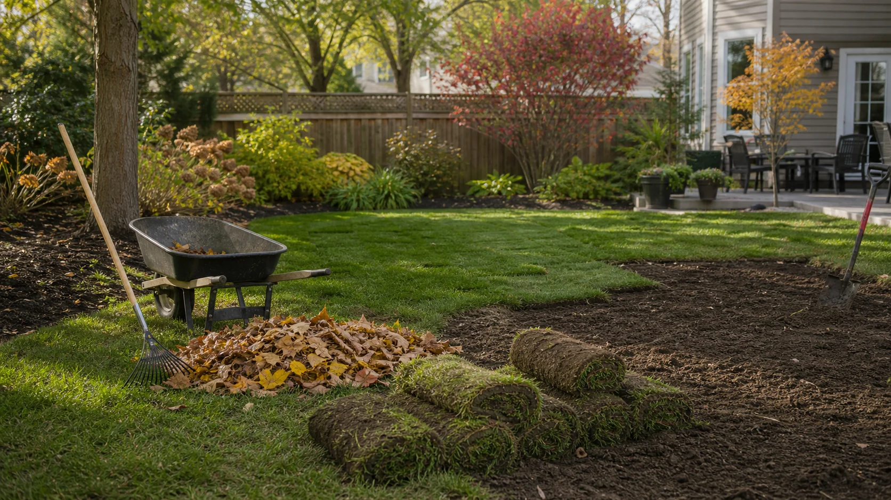
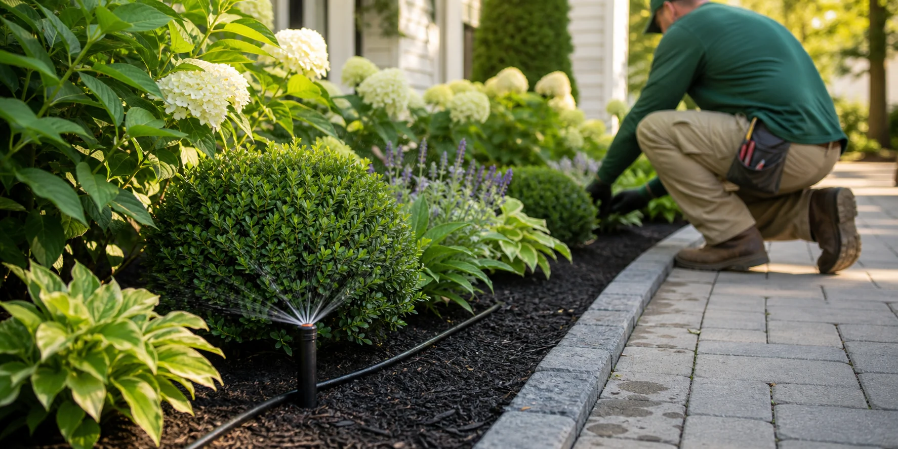

Keep the property presentable.
Best for recurring maintenance, clean edges, turf monitoring, and ongoing curb appeal.
Describe the yard issue once, then use these categories to understand which independent local provider type may fit the request.
Instead of treating every task as a separate search, GreenScape Lawn Care Connect organizes common lawn and yard needs into practical provider categories.
Best for recurring maintenance, clean edges, turf monitoring, and ongoing curb appeal.
Best for seasonal debris, bare patches, stressed grass, and practical turf repair conversations.
Best for planting, bed upgrades, shrub shaping, watering issues, and irrigation support.

Use this category when the property mainly needs presentation, recurring maintenance, cleaner edges, or help staying ahead of seasonal growth.

This category fits one-time cleanup needs, neglected areas, storm or leaf debris, visible turf damage, and bare spots that need provider review.

Use this category when the request goes beyond grass cutting and involves the landscape features or systems that affect the whole yard.
Clear details do not replace a provider estimate, but they make the first conversation more useful.
Note whether the need is recurring, seasonal, urgent, repair-focused, or part of a larger yard improvement.
Include approximate yard size, gates, slopes, pets, parking, irrigation, debris volume, and access limitations.
Photos of the whole yard and close-up problem areas can help providers discuss scope and availability sooner.
A healthy yard changes through the year. Tell us whether you need mowing, fertilization, shrub pruning, irrigation support, cleanup, or repair work, and we will help route the request toward relevant local provider categories.
GreenScape Lawn Care Connect is not the company performing the work. Homeowners choose who to hire and should confirm license, insurance, scope, schedule, and price directly with any provider.